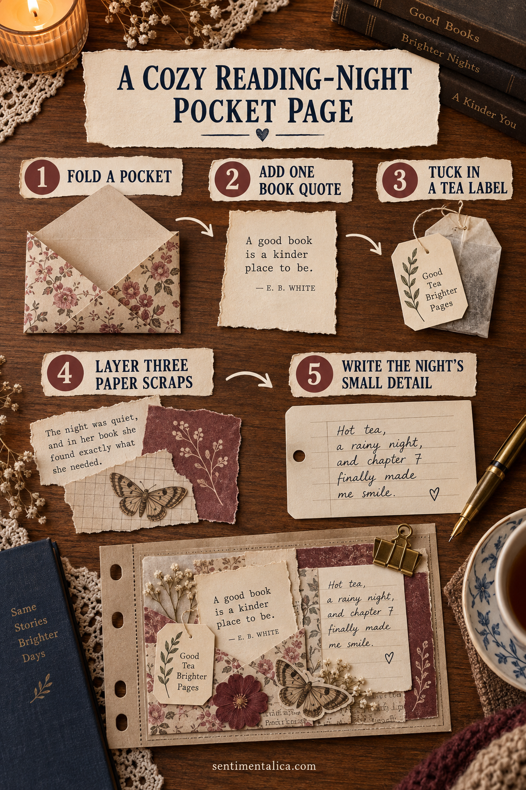

Make a cozy reading-night pocket page from one real evening at home. A folded pocket, one remembered sentence, and three paper scraps are enough to preserve the mood without turning it into a large project.

Fold one useful pocket
Cut a rectangle a little wider than the note you want to keep. Fold the bottom up by two inches, crease it, then glue only the side edges. Test the opening with a plain card before adding decoration.
Choose one line from the evening
Copy one short sentence from the book, or write what you noticed while reading. Keep it brief enough to read at a glance. This becomes the page’s emotional center.
Save one ordinary paper trace
A tea tag, library slip, receipt, or scrap of wrapping paper gives the page a real date and place. Trim away blank bulk, but keep any useful wording or color.
Layer only three scraps
Use one quiet base, one narrow patterned strip, and one small accent. Overlap them beneath the pocket so the page feels connected without becoming thick.
Finish with the smallest true detail
Write the weather, the drink, the chapter, or why you stayed home. One precise detail will make the page more memorable than another embellishment.
Want a low-pressure page to practise with? Open the 100 free floral pictures, choose one image that matches your palette, and try the method before using a favorite original.
Let the page stay simple
Use a glue stick or a thin layer of paper adhesive, keep wet glue away from photographs, and allow folded pieces to dry before closing the journal. Flat paper traces are safer for the binding than thick natural objects or heavy charms.
When the page is finished, add the full date and one sentence only you could have written. That final detail turns a pretty arrangement into a memory.
Prepare a small, calming workspace
Clear only enough room for the open journal and one shallow tray. Put scissors, adhesive, pencil, and the chosen papers within reach, then move the larger supply boxes away. A limited workspace reduces repeated decisions and makes it easier to notice when the page is already complete.
If you feel rushed, do the construction first and the writing later. Keep the photograph or note in the unfinished pocket so nothing is lost. The page can wait until you have the quiet attention its story deserves. Close the supplies when you stop so returning feels easy.
Check the pocket before you finish
Stand the page upright and slide the note in and out twice. If the opening catches, trim the insert rather than forcing the seam. Make sure the tea label or receipt cannot fall below the pocket edge, and keep the title clear when the note is removed.
Photograph the loose arrangement before gluing. That small record makes it easy to rebuild if one layer shifts. When everything is attached, write the book title and full date on the back of the insert. Those facts may feel obvious tonight, but they are the details most likely to disappear later.